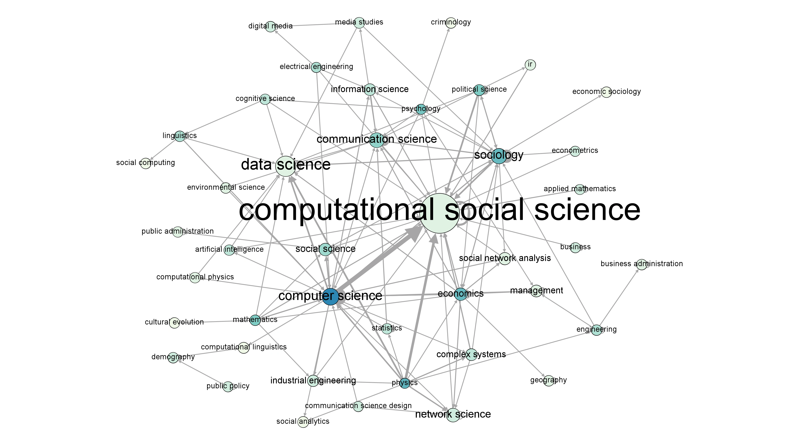
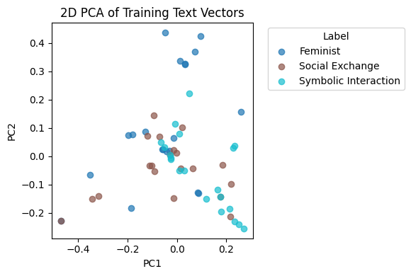
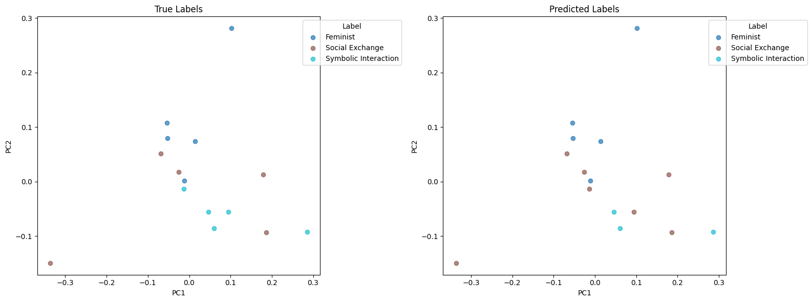
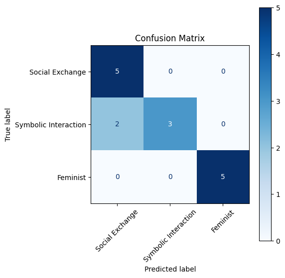
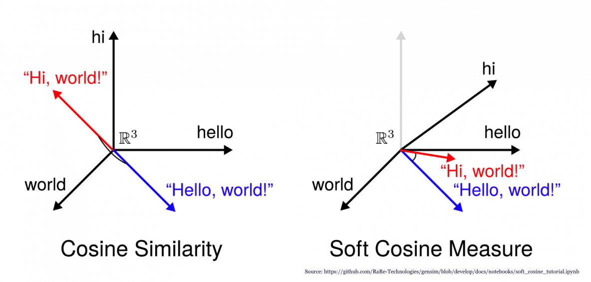
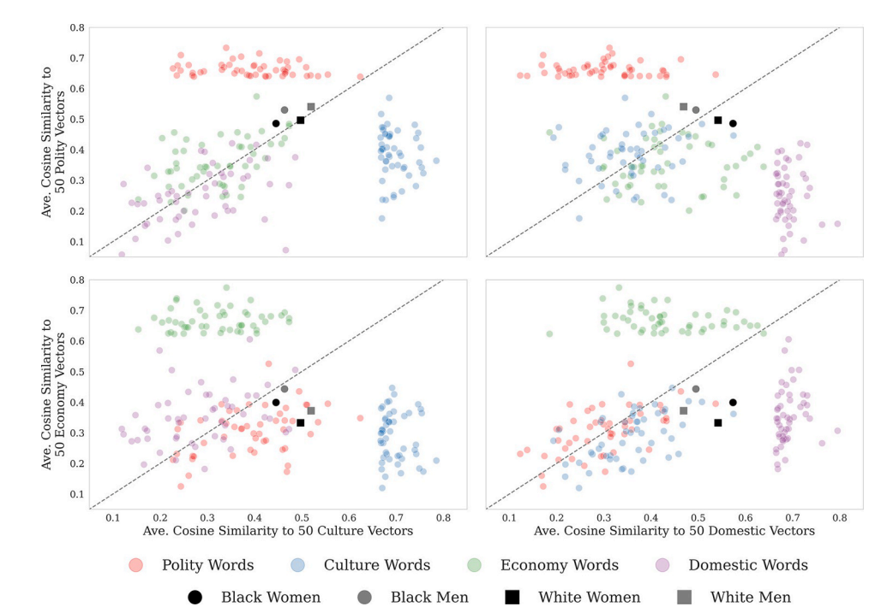
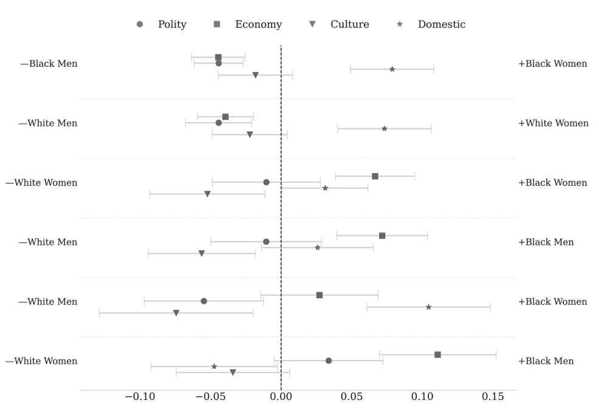
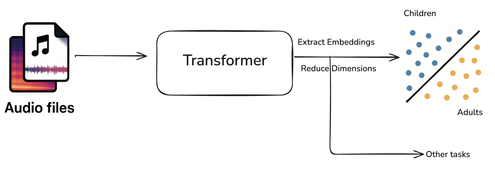

SOCI 415
Critical Family and Kinship Studies through LLM, Text Embedding and Social Network Analysis
Introduction
Sociology has changed. It’s no longer just theory and text. It’s an ever-evolving fusion of data, algorithms, and human stories.
Sociology – and its power to map social patterns – drives new insights. Survey data, social media, census records: features selected, models trained, findings validated. Contextualization. Interpretation. Critical reflection.
Sociology has changed. The era of narrative alone has given way to data-grounded discovery In the quest to understand inequality, networks, and collective behavior. And those who harness both numbers and nuance, redefine how we see society. Sociology has changed. When social phenomena are both seen and measured, the discipline is transformed.

Notebook 1: Text Classification and Zero-shot Classification Demo
Learning Outcomes: Through this class, students will
- Understand how to vectorize text data for qualitative analysis.
- Understand what classifiers are, how they work, and how to apply them to sociological research.
- Apply classical methods to classify text, which requires labeled training data.
- Apply the theories learned in the course to have large language models (LLMs) annotate text without fitting training data.
- Critically evaluate classification quality and analyze the advantages and disadvantages of using large language models (LLMs) in sociological research.
Class Structure
Part A: Intro to Vectorization and Classification
- Dataset: In this part, we will use a labeled text dataset related to topics discussed in the course, vectorize it, and show with 2D visualization what text data look like in the eyes of a classifier.
- We will then train the model with a training set, and test the prediction quality with a test set. Here we introduce the concept of the golden rule in machine learning, which helps us evaluate how well our classifier generalizes to new, unseen data.
- Lastly, we cover how do we evaluate the quality of prediction using accuracy and how we can visualize the result using a confusion matrix. This provides students with a basic insight of machine learning.
Part B: Intro to Zero-shot Classification with LLM
- Dataset: In this part, we will use the same dataset as the previous part and a pre-trained LLM to perform classification.
- We will provide a prompt template let students apply knowledge to generate their own prompts and make classifications.
- We will also show that, given a range of possible labels, students can use LLM to predict even beyond the labels in the original dataset.
- Lastly, we will evaluate the quality of predictions, explain the importance of prompting/in-context learning in zero-shot classification and discuss the pros and cons of using pre-trained LLM.
Key Features and Results
- Visual Presentations of Concepts, Output and Results



- Interactive Class Activity
Questsion: What theory best align with the text below?
Text: ...
Choices: Social Exchange or Symbolic Interaction or Feminism
Answer: Students get to apply their knowledge to design and try out their own prompt based on the given template.
- Connection to Academic Reseach
A number of sociology papers employed text classification as their key methodology, for example:
Blodgett, S. L., & Green, L. (2016). Demographic Dialectal Variation in Social Media: A Case Study of African-American English. ArXiv. https://arxiv.org/abs/1608.08868
Notebook 2: Word Embeddings and Cosine Similarity
Learning Outcomes: Through this class, students will
- Using examples from social media data, explore theory interactively based on Nelson’s (2021) methodology.
- Understand the concept of word embeddings and cosine similarity between words.
- Understand how programs and algorithms extract themes and keywords from text.
- Apply knowledge of conflict theory and feminist theory to name categories that reflect intersectionality within families.
- Interpret analysis results and discuss their potential biases.
Class Structure
- Dataset: We will provide students with a cleaned text dataset containing reddit posts from r/family and r/FamilyIssues.
- Following the basic data exploration, we will introduce the concept of word embedding by training Word2Vec embeddings for different subgroups using
gensimpython library. Students can play around with keywords related to different theories in this part. - We then will introduce the concept of cosine similarity, and calculate the cosine similarity between each keyword (e.g. “care”, “power”, “labor”, “authority”, “patriarchy”) and the group vectors we create in this form (“female” + “mother” + “20 - 29”).
- The results such as distribution of words with be displayed through a Principal Component Analysis (PCA) 2D scatter plot and the bar plot showing the distribution of cosine similarity.
- Finally, we will engage in a critical discussion of the findings generated through word embedding techniques, focusing on how these results align with established family theories and considering potential sources of bias in the analysis.
Key Features and Results
- A Hands-on Experience to Work with Social Media Data

- Intuitive and Practical Concepts

- Methodology Based on Published Research
Nelson, L. K. (2021). Leveraging the alignment between machine learning and intersectionality: Using word embeddings to measure intersectional experiences of the nineteenth century U.S. South.https://doi.org/10.1016/j.poetic.2021.101539


Figures source: Laura(2021)
- Highly Visualized Result Presentations
Notebook 3: Audio Analysis
Learning Outcomes: Through this class, students will
- Use machine learning to analyze audio data focussed on family dynamics and child development.
- Understand that non numerical data (like audio or text) can be transformed into numerical data for analysis.
- Understand that audio data can be embedded into a vector space where similarity can be measured (eg. an audio recording of a child saying “I love you” is close to a recording of a child saying “I like you”).
- Use audio embeddings to classify audio data into “adult” and “child” voices.
- We can take it a step further use audio recordings and get word counts, sentiment (“happy”, “sad”, “angry”) and other features from the audio data.
- Audio analysis has been used in sociological research to predict socioeconomic status, child development, and family dynamics.
Class Structure
- Dataset: Depending on what we want to proceed with, we can easily get adult, child and infant audio datasets.
- Explain that any data can be embedded (as vectors) to do further analysis.
- Use Audio Spectrogram Transformer models to get audio embeddings for the audio data.
- Use the embeddings to classify audio data into categories like “adult” and “child” voices using simple linear models.
- The same concepts of PCA and cosine similarity can be applied to audio embeddings.
- OpenAI’s Whisper is a speech to text model. We can also do that for various analysis tasks like word counts.
Key Features and Results
Research literature has explored using LENA recording devices attached to children. This will give students a sense of how such data is analyzed.

Notebook 4: Learning theories of family using social network analysis
Learning Outcomes:
Understand how social network analyis (SNA) can be used to compare and contrast various family structures and provide empirical evidence for key family theories discussed in the course.
Understand how family members can be organized into subsystems, and how those systems can pattern interdependence and hierarchy using degree centrality measures.
Explain how social roles shape interaction patterns within a family unit using community detection algorithms.
Understand how resources and power can move through gendered pathways in family networks, and how those pathways may reinforce patriarchal structures.
Evaluate and examine key differences in family dynamics between datasets belonging to two very different time periods and cultural origins.
Key Features
Our aim is not just to demonstrate how to use social network analysis in sociological research, but give visual, empirical justifications to various topics in the course (we focus on feminist theory, symbolic interactionalism, and family systems theory). We accomplish this by analyzing two distinct datasets:
KINMATRIX, a massive ego-centric family network survey from 10 countries around the world (Nordic, Western, Central/Eastern, Southern Europe and the USA), containing information of 12’438 individuals worldwide with 250’000+ ties between them, collected recently (between 2022 and 2023).
The China Biographical Database, a massive prosopographical dataset of around 640,000 chinese individuals whose lived during middle-period China (1600-1200 AC). Used for the study of chinese history, the dataset contains coded kinship links as well as non-kin social connections.
Class structure
Using a jupyter notebook, we will:
Use various social network analysis methods to compare and contrast family structures between the modern-day western world and middle-period China.
Use centrality measures to study how family members are organized into subsystems, and how those subsystems contain orderings of authority/influence. By comparing highly centralized historical lineages like Chinese imperial clans to present-day western extended families, we can contrast how authority flows through the networks. For instance, we can hypothesize that elite clan heads have high levels of eigenvector centrality, indicating concentrated power.
Use community detection algorithms to partition kin ties into communities. Hypothetically, in the CBDB datset, we would see large clusters that correspond to clans/imperial lineages. Conversely, in the KINMATRIX dataset, we would see significantly smaller communities representing nuclear family clusters.
Identify how power can flow through family networks differently between gendered pathways, by identifying brokerage positions (such as marriage bridges) using betweeness centrality. One could hypothesize that in the CBDB dataset, nodes flagged as female would occupy less bridges between major clans.
Reference
- Coleman, C., Lyon, S., & Perla, J. (n.d.). Introduction to Economic Modeling and Data Science. https://datascience.quantecon.org/
- Greg Yauney and The AI for Humanists team. Zero-Shot Prompting with LLMs. Retrieved May 29, 2025, from https://colab.research.google.com/drive/1QIG-3bIo1BHVWWlS22-1XItlZRrGSMNe
- Nelson, L. K. (2021). Leveraging the alignment between machine learning and intersectionality: Using word embeddings to measure intersectional experiences of the nineteenth century U.S. South. Poetics, 88, 101539. https://doi.org/10.1016/j.poetic.2021.101539
- Rowe, M. L., Pan, B. A., Ayoub, C., & Tamis-LeMonda, C. S. (2021). Socioeconomic status correlates with measures of Language Environment Analysis (LENA) system: A meta-analysis. Journal of Child Language. https://www.cambridge.org/core/journals/journal-of-child-language/article/socioeconomic-status-correlates-with-measures-of-language-environment-analysis-lena-system-a-metaanalysis/11C5B4C4954EDEB11DD5A38501A366A0